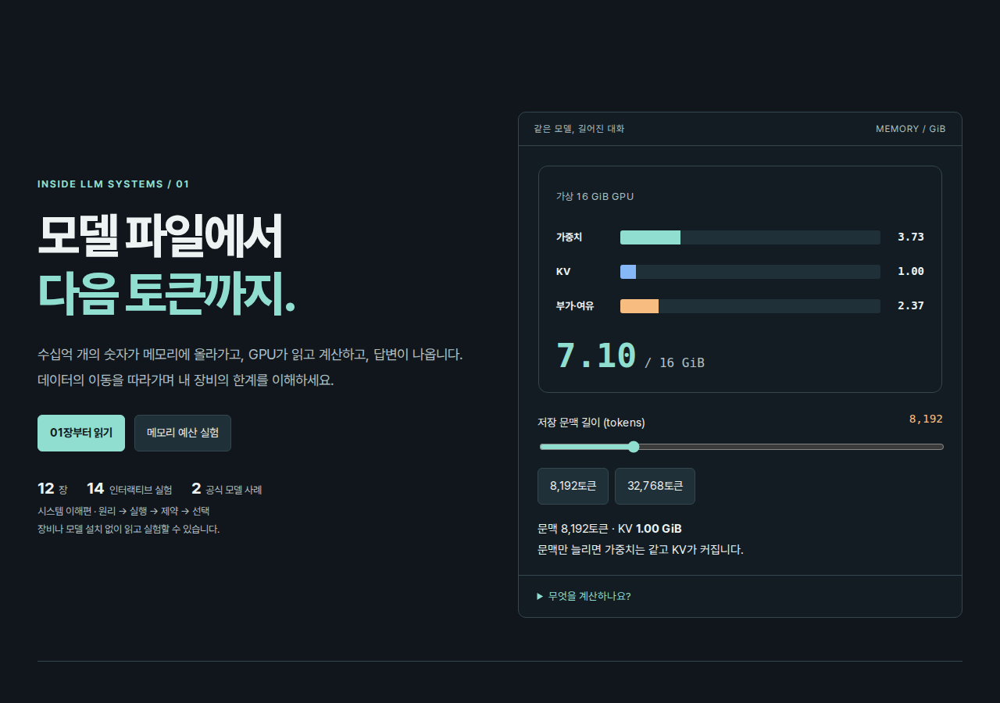
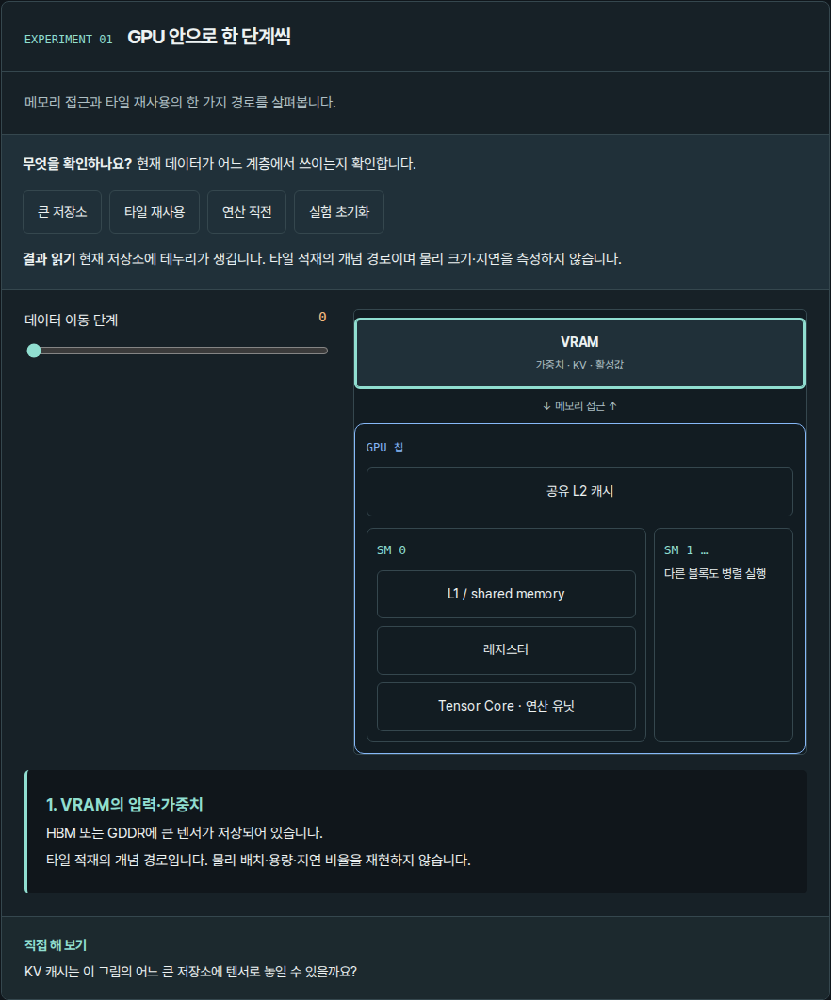
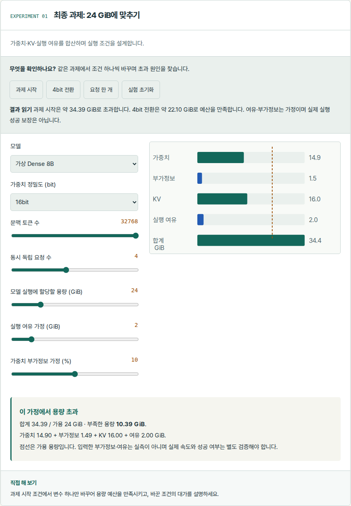

검증과 남은 확인
검증일: 2026-10-08. 실제 GPU 또는 LLM을 구동한 벤치마크는 아니다.
검증 수준
| 수준 | 확인한 것 | 범위 |
|---|---|---|
| L1 접근 | 표지·12장 해시 경로, 본문·실험·서가 복귀 | Chromium, 1280·390·320px |
| L2 반응 | 14개 실험의 모든 예제, 입력 경계·선택값, 초기화와 확인 문제 정답·오답 | 14×3 = 42개 실험 화면 |
| L3 모형 | 용량·단위·KV·행렬·prefill/decode·roofline·MoE·전송·양자화 | 수치 테스트 25개와 구조·경로 테스트 6개 |
| L4 학습 | 독자가 새 문제를 풀 수 있는가 | 실제 독자 실험 미수행 |
공통 Python 29개·서가 JavaScript 4개 테스트 통과. 추가 접근성 확인: 밝은/어두운 테마, 메뉴 열기·Escape, 키보드 입력, 결과 aria-live, 감소된 동작 환경. 모든 장의 세 폭에서 문서 가로 넘침 0. 실제 모바일 기기·Safari·Firefox·화면 낭독기는 확인하지 않았다.
실험별 확인 범위
| 실험 | L3의 대상 | L1·L2 | L4 |
|---|---|---|---|
| 파일 구성 | 고정 시나리오 | 3폭 모두 통과 | 미수행 |
| 파라미터 | 수치 계산 | 3폭 모두 통과 | 미수행 |
| 가중치 용량 | 수치 계산 | 3폭 모두 통과 | 미수행 |
| 양자화 | 수치 계산 | 3폭 모두 통과 | 미수행 |
| 요청 이동 | 고정 시나리오 | 3폭 모두 통과 | 미수행 |
| GPU 계층 | 개념 경로 | 3폭 모두 통과 | 미수행 |
| 행렬 타일 | 실제 행렬곱·적재 모형 | 3폭 모두 통과 | 미수행 |
| Prefill/decode | 투영 위치 수 모형 | 3폭 모두 통과 | 미수행 |
| KV 캐시 | 논리 용량 계산 | 3폭 모두 통과 | 미수행 |
| Roofline | 이상적 시간 하한 | 3폭 모두 통과 | 미수행 |
| MoE | 가상 파라미터 모형 | 3폭 모두 통과 | 미수행 |
| 전송 | 순수 시간 계산 | 3폭 모두 통과 | 미수행 |
| 공식 모델 | 공식 사양 기반 계산 | 3폭 모두 통과 | 미수행 |
| 종합 예산 | 실행 여유를 가정한 계산 | 3폭 모두 통과 | 미수행 |
시나리오·개념 경로는 공식 문서와 대조했으며 GPU 실측 타임라인이나 물리 배치를 재현하지 않는다.
재현 방법
npm test --prefix books/llm-gpu
python3 scripts/validate.py
python3 scripts/build_catalog.py --check
python3 -m http.server 8765
BOOK_URL=http://127.0.0.1:8765/books/llm-gpu/ node books/llm-gpu/tests/browser.cjsPlaywright와 Chromium이 필요하다. 비표준 실행 파일은 PW_EXECUTABLE_PATH로 지정한다. evidence/browser-results.json은 실제 브라우저 조작 결과다.
화면 확인





배포 확인
콘텐츠 커밋 846dec548f9b6d68d436bc6e52c564ce19ab668d를 main에 반영했다. GitHub Actions의 Validate shelf and books와 pages build and deployment가 모두 성공했다. 공개 Chromium에서 서가→책 펼침→읽기, KV 2.000 GiB·Qwen MoE KV 0.750 GiB·종합 예산 22.10 GiB 예제를 확인했다. 320px에서 모바일 차트, 서가 복귀와 다시 읽기, 문서 가로 넘침 없음을 확인했다. 공개 페이지 오류 0개.
장 그림·연결 보강 확인 (2026-10-08)
구조: 12개 장 모두 .figure-art 안에 aria-label이 있는 그림과 다른 책 링크가 있음을 Chromium에서 320px(동작 허용)·390px·1280px(동작 줄이기)로 확인했고, 세 폭 모두 문서 가로 넘침이 없었다. 동작: tests/browser.cjs 재실행 결과 44개 화면·42개 실험 조작 오류 0. 수치: 그림의 숫자는 실험과 같은 GMath 함수에서 나오며(예: 가상 8B KV 8,192토큰 1.00 GiB, Qwen3-8B 1.125 GiB·Qwen3-30B-A3B 0.750 GiB, 예산 34.39·14.20·7.10 GiB), npm test 31개 통과. 책 사이 링크는 validate.py가 도착 책의 book-routes와 대조한다. 확인하지 못한 것: 그림이 학습에 주는 효과(L4), Safari·Firefox의 SVG 애니메이션, 실제 휴대폰에서 그림 옆으로 밀기.